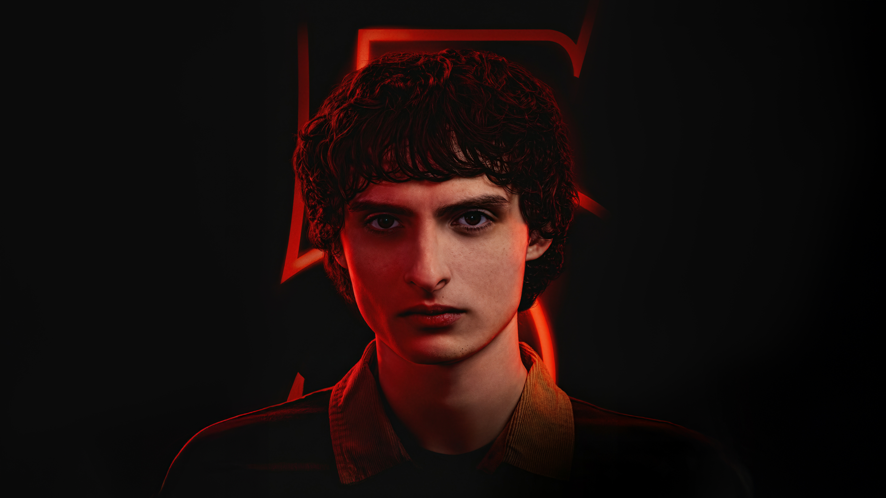

Mike Wheeler es uno de los líderes del grupo de amigos de Hawkins.
Es inteligente, valiente y siempre está dispuesto a ayudar a quienes lo necesitan.
Su amistad con Will, Dustin y Lucas, así como su relación con Eleven, son fundamentales
en la historia.
Nombre del personaje: Mike Wheeler
Nombre en la vida real: Finn Wolfhard
Edad del personaje: Aproximadamente 15 años
Lugar de nacimiento: Hawkins, Indiana
Pasatiempo favorito: Jugar juegos de rol (Dungeons & Dragons) y pasar tiempo con sus amigos.